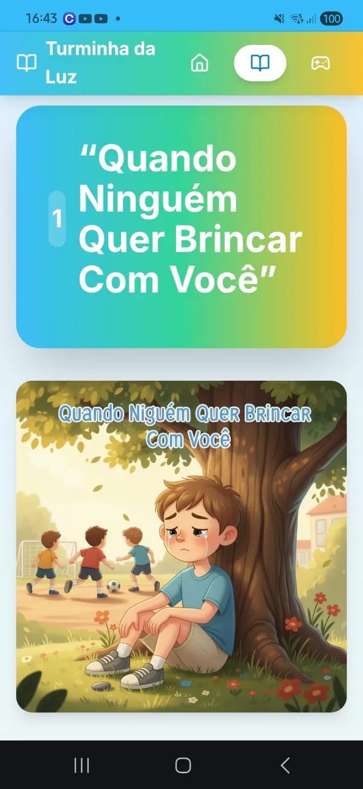
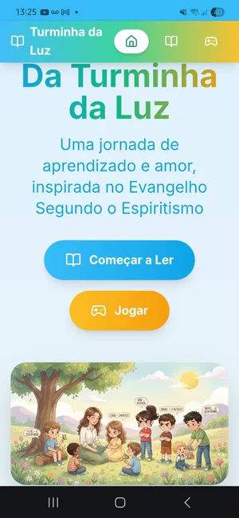
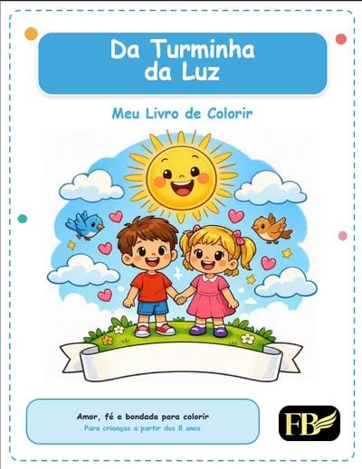
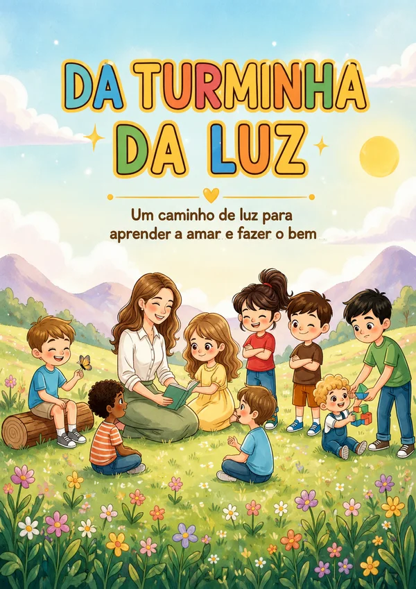

Um kit completo com 20 histórias encantadoras, um app interativo e um livro de colorir para transformar a evangelização infantil em momentos leves, divertidos e cheios de significado — sem brigar com a tela e sem material chato.



Acesso imediato • Pague uma vez, use para sempre • Ideal para crianças de 4 a 10 anos
Cada parte do kit foi criada para prender a atenção da criança e plantar valores que ficam para a vida toda.

Cada capítulo traz uma aventura da Turminha da Luz que conecta o dia a dia da criança aos valores do Evangelho — com linguagem simples, personagens cativantes e lições que ficam no coração.
A criança lê, joga (memória, dominó, quebra-cabeça), reflete e conquista "asinhas" a cada capítulo. Tudo pensado para reforçar os valores de forma leve e divertida — direto no celular ou tablet.
Mais de 20 ilustrações exclusivas para a criança criar, colorir e levar o aprendizado para além das telas — perfeito para momentos offline de reflexão e diversão.
A criança mergulha em histórias encantadoras que conectam situações do dia a dia aos valores do Evangelho.
No app, ela joga, reflete e conquista "asinhas" a cada capítulo — reforçando o aprendizado de forma divertida.
Com o livro de colorir, o aprendizado ganha vida fora da tela — perfeito para momentos de reflexão e diversão em família.
Seu filho passa horas nas telas, mas você sente que não está aprendendo nada de valor.
Você quer ensinar os valores espíritas em casa, mas não sabe por onde começar.
Os materiais religiosos que existem são chatos, antigos ou difíceis de prender a atenção da criança.
Na evangelização do centro, seu filho participa, mas em casa o assunto morre.
Você gostaria de ter mais momentos de conversa em família sobre valores — mas falta um "gatilho" para começar.
É exatamente por isso que criamos o Da Turminha da Luz — um kit que transforma esses desafios em momentos de aprendizado que seu filho vai amar.
Ver como funcionaA criança só quer tela — e você sente culpa por não conseguir oferecer algo melhor.
Falar sobre valores espíritas em casa parece forçado ou sem conexão com o mundo dela.
O material disponível é antigo, pouco atrativo ou não prende a atenção.
A evangelização do centro é o único momento em que o assunto aparece.
A criança pede para ler as histórias e jogar no app — e você sabe que ela está aprendendo.
Os valores espíritas passam a fazer parte da rotina de forma natural e leve.
A família ganha novos momentos de conversa, reflexão e conexão.
O aprendizado continua em casa, complementando a evangelização do centro.
"Meu filho pede toda noite para ler mais um capítulo. Nunca pensei que ele fosse se interessar tanto por valores espíritas — e de forma tão natural."
Fernanda S.
Mãe do Miguel — Campinas/SP
"Como evangelizador infantil, posso dizer que este material é excepcional. As histórias criam uma conexão incrível com as crianças e os jogos do app reforçam tudo de forma divertida."
Carlos M.
Pai e evangelizador — Belo Horizonte/MG
"Comprei para minha neta e foi o melhor presente que já dei. Ela adora as conquistas do app e sempre me conta o que aprendeu com a Turminha."
Dona Lúcia
Avó da Beatriz (7 anos) — Curitiba/PR
"Estamos usando nas aulas de evangelização do nosso centro e os resultados são maravilhosos. As crianças ficam muito mais engajadas e participativas."
Patrícia R.
Coordenadora de evangelização — São Paulo/SP
Kit Completo Da Turminha da Luz
De R$ 97,00
pagamento único • sem mensalidade • acesso para sempre
Preço promocional de lançamento — em breve volta para R$97.
Garantia de 7 dias
Se você ou seu filho não amarem o material, devolvemos 100% do seu dinheiro. Sem perguntas.
Pagamento seguro • Acesso imediato após a confirmação
O kit foi pensado para crianças de 4 a 10 anos. As histórias e o app são ideais a partir de 6 anos, enquanto o livro de colorir pode ser aproveitado a partir de 4 anos com ajuda dos pais.
Não. As histórias trabalham valores universais como empatia, perdão, gratidão, bondade e amor ao próximo. Qualquer família que deseje transmitir bons valores às crianças pode aproveitar o material.
Após a compra, você recebe acesso imediato no e-mail cadastrado. Basta baixar o app e começar — sem espera e sem complicação.
Sim. O app é compatível com celulares e tablets, para que a criança possa ler, jogar e conquistar asinhas onde estiver.
Sim! O Livro de Colorir com mais de 20 ilustrações exclusivas acompanha o kit como bônus, sem custo adicional.
Isso mesmo. Você paga uma vez só (R$47) e tem acesso vitalício a todo o material — sem mensalidade, sem taxas escondidas, sem surpresas.
Sim. Você tem 7 dias de garantia incondicional. Se você ou seu filho não amarem o material, devolvemos 100% do seu dinheiro — sem perguntas, sem burocracia.
Cada dia que passa é uma oportunidade de plantar valores que ficam para a vida toda. Comece agora e transforme a rotina da sua família com histórias que ensinam o bem brincando.
Quero Começar Agora — R$47